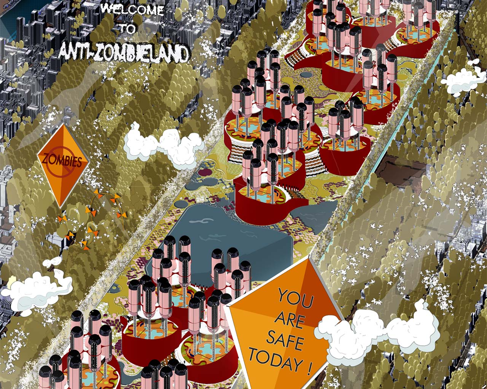
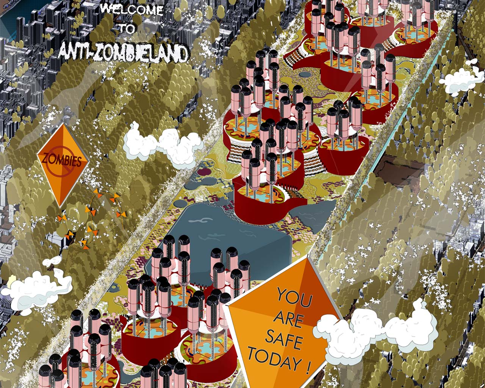

Malicious Software (Spyware)
Topic Selected: Malicious Software (Spyware)
What is Spyware?
Spyware is a type of malicious software designed to gather sensitive information from users without their knowledge. It can perform actions like keylogging, screen capturing, and data exfiltration, enabling attackers to steal valuable information like passwords, personal details, and financial data.
Tool Selected: njRAT
The tool chosen for this spyware-related attack is njRAT, a popular Remote Access Trojan (RAT) found on GitHub. This tool allows attackers to remotely monitor and control a victim’s machine. It’s widely used for malicious activities like spying, stealing data, and controlling systems.
How njRAT Facilitates Spyware Attacks
- Keylogging: Captures keystrokes, enabling the attacker to steal sensitive information such as passwords or personal messages.
- Remote Access: Allows full control of the victim’s system, enabling the attacker to steal files, modify data, or execute additional malware.
- Data Exfiltration: Attackers can download important files from the victim's system without their knowledge.
- Screen and Webcam Capture: Enables the attacker to take screenshots or access the victim’s webcam, compromising privacy further.